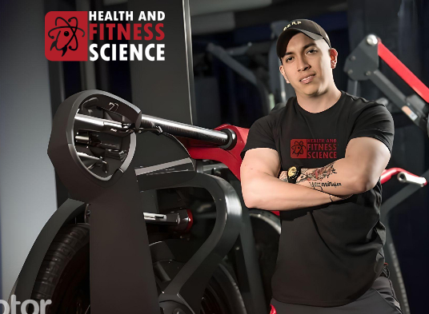

Conoceme

nutriólogo y Health Coach
CEO | health and fitness science
Julio Castañeda
Te cuento un poco sobre mi, soy nutriólogo clínico con especialidad en nutrición
deportiva,
He tenido el privilegio de estudiar con algunas de las mejores industrias a lo largo de los
años Y Actualmente me encuentro realizando un alta especialidad en ciencias de la salud en
el Holistic Performance Institute (NZ).
Me dedico a dar consultas de nutrición en las siguientes áreas:
Nutrición deportiva (atletas/Recreativos).
Preparación de atletas para competencia.
Control de peso en diferentes etapas de vida.
Control de enfermedades metabólicas.